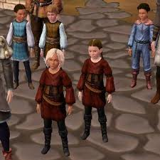
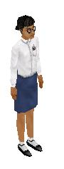
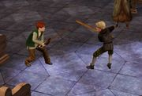

sims
kiddos

Childhood in The Sims can either be the state a Sim was created in, or attained after 72 game hours as a baby. Children do not grow older, and cannot gain skill points. Premade children have no skills. Kids created in Create a Sim may have random or no skills, but children born in-game will always have random skills. They will not be able to use most of them, but children who get high creativity can earn money by painting at an easel.


medieval children dueling
Back to home